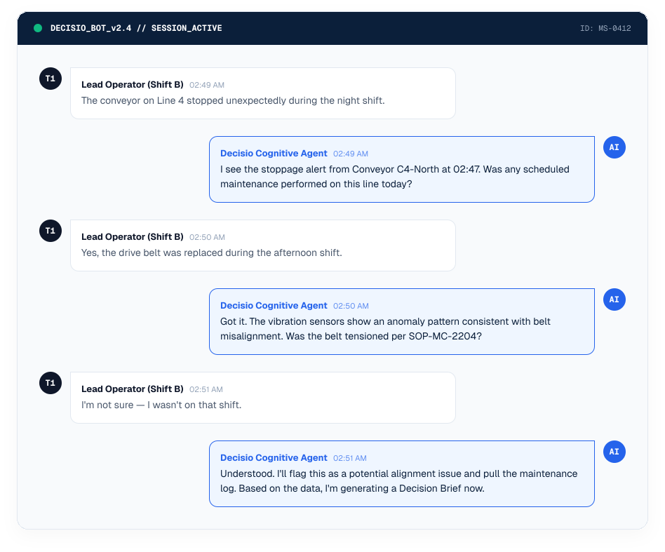
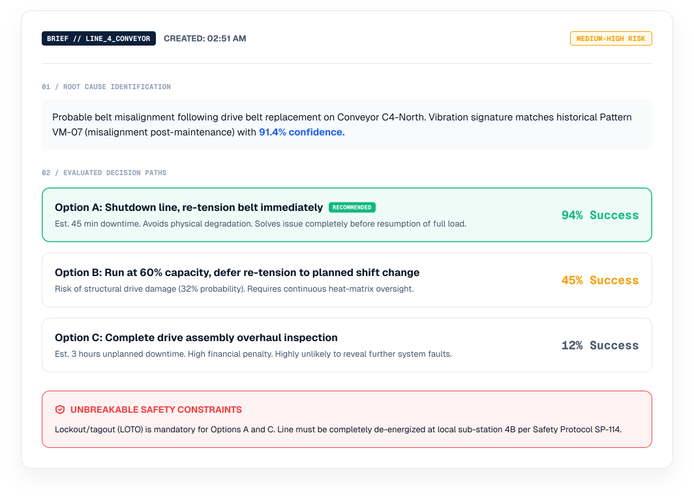
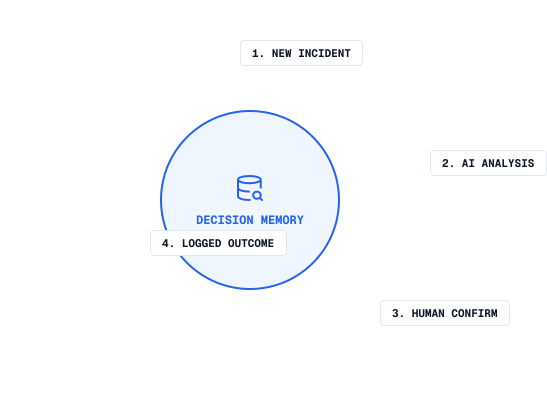

1
Report
An anomaly or incident is detected from sensors, operator input, or telemetry system alerts. The process begins instantly.
From the first anomaly signal to institutional memory — see how Decisio guides your team through every critical decision without ever taking control.
An anomaly or incident is detected from sensors, operator input, or telemetry system alerts. The process begins instantly.
Decisio immediately classifies the event type, severity, affected equipment nodes, and maps historical operational precedent.
The system asks targeted questions to gather missing on-the-ground context that sensors can't see directly from operators.
AI engines cross-reference telemetry, maintenance history, SOPs, and physical physics constraints to build a 360° picture.
A structured, interactive brief is formatted with root causes, alternative execution paths, safety limits, and risk vectors.
The human operations team acts on the chosen path via physical control panels. Decisio operates strictly read-only and never commands equipment.
Sensors measure the outcome of the action. Decisio logs the exact changes and evaluates if the machine behavior matched modeled predictions.
The full decision chain, telemetry context, and human justification are indexed, immediately improving the system's future precision.
Decisio queries on-shift staff directly to aggregate sensory inputs with critical manual human intelligence.

The single interface presented to shift leads, mapping precise probabilities against physical safety guidelines.

Every operational action reinforces Decisio’s collective knowledge database, preserving shift experience for years to come.
Every decision your team makes becomes part of Decisio’s institutional knowledge base. Over time, recommendations get sharper, patterns emerge faster, and your organization builds a living record of operational wisdom.
Reduce onboarding time: New technicians can instantly see previous resolution paths.
Prevent senior retirements drain: Capture decades of veteran intuition permanently.
